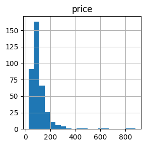
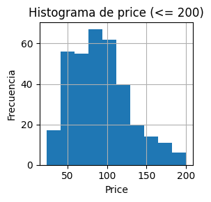
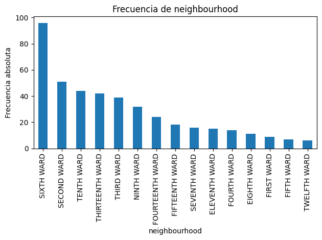
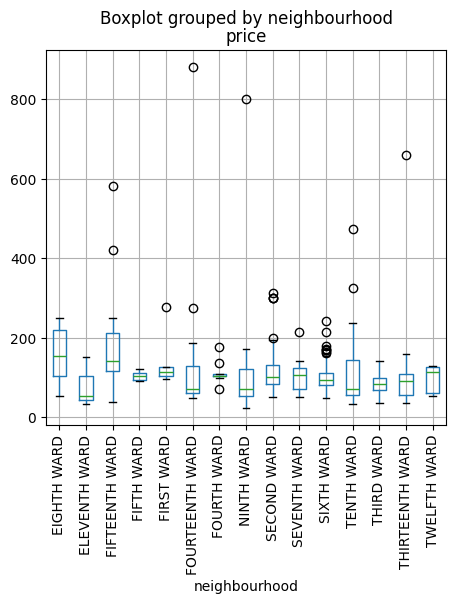
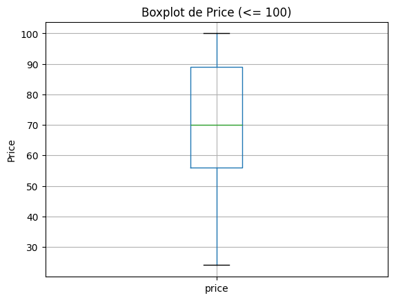
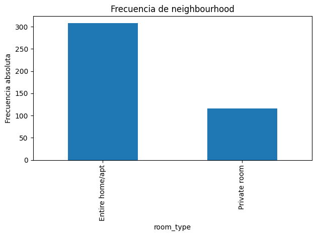
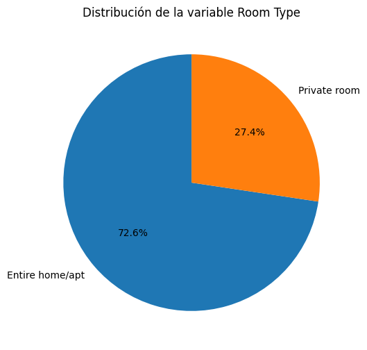
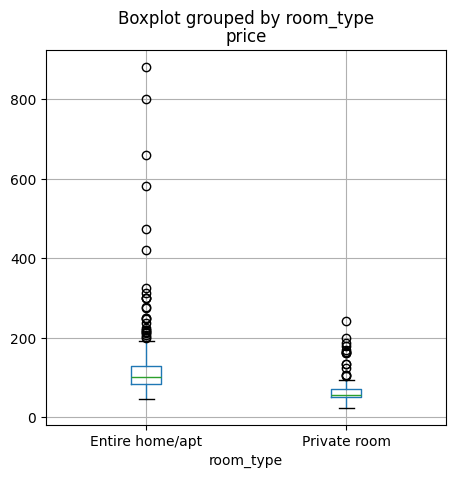

import os, sys
import numpy as np
import pandas as pdSesión 1: Analítica descriptiva de datos
Esta primera práctica se realizará sobre los datos obtenidos de la página https://insideairbnb.com/
para la ciudad de Albany
Preparación del ambiente de trabajo
Cargue de librerías
Antes de realizar un análisis, se debe verificar que se cuenta con las librerías requeridas intaladas.
En este taller iniciamos con las librerías básicas.
Sin embargo, en cualquier momento se puede realizar la instalación y cargue de una nueva librería.
Para la instalación de una nueva librería puede utilizar el comando ‘conda install’ de Anaconda.
Lectura de los datos
Lectura desde carpeta local de un archivo en formato csv
Ingrese a la carpeta compartida en Onedrive TALLER 1 y descargue los archivos: listings.csv y listings.xlsx
Configuración del directorio:
1. Copie la ruta en donde guardó el archivo
## Copie la ruta despues del comando %cd
# %cd C:\Users\X1 Carbon\OneDrive\Documentos\1_NEICON\1_Proyectos\2_Carpeta Tito\Capacitación UniAndes_Ecopetrol\Datsets\Taller_1
ruta = './listings.csv'## Compado para cargar archivos en formato texto (csv)
data=pd.read_csv(ruta, sep=',')## Comando Para obtener una primera vista de la tabla
data.head(3)| id | name | host_id | host_name | neighbourhood_group | neighbourhood | latitude | longitude | room_type | price | minimum_nights | number_of_reviews | last_review | reviews_per_month | calculated_host_listings_count | availability_365 | number_of_reviews_ltm | license | |
|---|---|---|---|---|---|---|---|---|---|---|---|---|---|---|---|---|---|---|
| 0 | 621960198566758900 | The Historic Jesse Buel Farmhouse w/ Heated Pool | 382970529 | Thomas | NaN | FOURTEENTH WARD | 42.66762 | -73.79919 | Entire home/apt | 882.0 | 1 | 15 | 2025-02-06 | 0.47 | 12 | 330 | 8 | NaN |
| 1 | 932642358896439621 | Stylish top floor apt w/parking | 232967878 | Diana | NaN | THIRTEENTH WARD | 42.67224 | -73.79301 | Entire home/apt | 106.0 | 1 | 37 | 2025-02-15 | 1.88 | 23 | 86 | 26 | NaN |
| 2 | 53567589 | Private Garden Apt in Downtown Albany|Pets All... | 433096110 | Brian | NaN | SIXTH WARD | 42.65204 | -73.76655 | Entire home/apt | 99.0 | 1 | 251 | 2025-02-23 | 6.40 | 4 | 341 | 73 | NaN |
Lectura desde carpeta local de un archivo en formato excel
## Comando para cargue d archivos en formato Excel
ruta = './listings.xlsx'
data=pd.read_excel(ruta)
data.head(4)| id | name | host_id | host_name | neighbourhood_group | neighbourhood | latitude | longitude | room_type | price | minimum_nights | number_of_reviews | last_review | reviews_per_month | calculated_host_listings_count | availability_365 | number_of_reviews_ltm | license | |
|---|---|---|---|---|---|---|---|---|---|---|---|---|---|---|---|---|---|---|
| 0 | 621960198566758912 | The Historic Jesse Buel Farmhouse w/ Heated Pool | 382970529 | Thomas | NaN | FOURTEENTH WARD | 42.66762 | -73.79919 | Entire home/apt | 882.0 | 1 | 15 | 2025-02-06 | 0.47 | 12 | 330 | 8 | NaN |
| 1 | 932642358896439680 | Stylish top floor apt w/parking | 232967878 | Diana | NaN | THIRTEENTH WARD | 42.67224 | -73.79301 | Entire home/apt | 106.0 | 1 | 37 | 2025-02-15 | 1.88 | 23 | 86 | 26 | NaN |
| 2 | 53567589 | Private Garden Apt in Downtown Albany|Pets All... | 433096110 | Brian | NaN | SIXTH WARD | 42.65204 | -73.76655 | Entire home/apt | 99.0 | 1 | 251 | 2025-02-23 | 6.40 | 4 | 341 | 73 | NaN |
| 3 | 20671966 | The Metropolitan | 98744672 | Bela | NaN | NINTH WARD | 42.65532 | -73.78244 | Entire home/apt | 58.0 | 2 | 46 | 2025-01-19 | 0.51 | 8 | 248 | 7 | NaN |
Como se puede observar en la vista anterior, la primera columna no tiene nombre, esto es por que el data frame de pandas asigna un índice, el cual nos puede ayudar a realizar algunas consultas posteriormente
Una vez se han cargado los datos se debe realizar un primer diagnóstico.
Identifique cuál es el tipo de variables que contiene el archivo, si la herramienta cargó correctamente los datos, la cantidad, formatos, valores etc.
Con su equipo haga una breve descripción del dataset cargado. Utilice los siguientes comandos para hacer la exploración
#Relaciona la cantidad de registros y variables que contiene el dataset
data.shape(424, 18)#Lista todas las variables que contiene el dataset y especifica el tipo de dato
data.dtypesid int64
name object
host_id int64
host_name object
neighbourhood_group float64
neighbourhood object
latitude float64
longitude float64
room_type object
price float64
minimum_nights int64
number_of_reviews int64
last_review datetime64[ns]
reviews_per_month float64
calculated_host_listings_count int64
availability_365 int64
number_of_reviews_ltm int64
license float64
dtype: object#Exploración de variables continuas
#Vamos a filtras las variables a analizar
#Para el ejercicio complemente con las variables faltantes que puedan ser de interés.
data_continuas=data.loc[:, ['price','minimum_nights', 'availability_365']]
data_continuas.head()| price | minimum_nights | availability_365 | |
|---|---|---|---|
| 0 | 882.0 | 1 | 330 |
| 1 | 106.0 | 1 | 86 |
| 2 | 99.0 | 1 | 341 |
| 3 | 58.0 | 2 | 248 |
| 4 | 50.0 | 2 | 340 |
#Cómo se comporta la variable precio - analice el resultado
data_continuas['price'].describe()count 374.000000
mean 110.042781
std 86.746145
min 24.000000
25% 68.000000
50% 93.000000
75% 122.750000
max 882.000000
Name: price, dtype: float64# Ahora vamos a generar las estadísticas descriptivas para todas las variables a la vez.
# Analice el resultado
variables_continuas = ['price','minimum_nights', 'availability_365']
estadisticas = data[variables_continuas].describe().T
# Mostramos las estadísticas
print("Estadísticas descriptivas")
print(estadisticas)Estadísticas descriptivas
count mean std min 25% 50% 75% \
price 374.0 110.042781 86.746145 24.0 68.00 93.0 122.75
minimum_nights 424.0 5.693396 9.627107 1.0 1.00 2.0 3.00
availability_365 424.0 233.261792 119.275432 0.0 119.75 268.0 341.25
max
price 882.0
minimum_nights 70.0
availability_365 365.0 data_continuas.info()<class 'pandas.core.frame.DataFrame'>
RangeIndex: 424 entries, 0 to 423
Data columns (total 3 columns):
# Column Non-Null Count Dtype
--- ------ -------------- -----
0 price 374 non-null float64
1 minimum_nights 424 non-null int64
2 availability_365 424 non-null int64
dtypes: float64(1), int64(2)
memory usage: 10.1 KB# Ahora vamos a analizar el comportamiento de manera gráfica para lo cual cargamos la librería
import matplotlib.pyplot as plt
# Histogramas de frecuencia
data[variables_continuas].hist('price', figsize=(3, 3), bins=20)
plt.tight_layout()
plt.show()
#Analiza el resultado y explora el código para mejorar el gráfico
#Ahora probemos otra sintáxis
data[data['price'] <= 200]['price'].hist(figsize=(3, 3), bins=10)
plt.title('Histograma de price (<= 200)')
plt.xlabel('Price')
plt.ylabel('Frecuencia')
plt.tight_layout()
plt.show()
#Analiza el resultado y comparte tus conclusiones.
#Compara las dos sintaxis, que observas?
data_continuas2=data.loc[:, ['price','neighbourhood']]
data_continuas2.head(10)| price | neighbourhood | |
|---|---|---|
| 0 | 882.0 | FOURTEENTH WARD |
| 1 | 106.0 | THIRTEENTH WARD |
| 2 | 99.0 | SIXTH WARD |
| 3 | 58.0 | NINTH WARD |
| 4 | 50.0 | NINTH WARD |
| 5 | 93.0 | SIXTH WARD |
| 6 | 156.0 | FOURTEENTH WARD |
| 7 | 142.0 | FOURTEENTH WARD |
| 8 | 96.0 | SIXTH WARD |
| 9 | 88.0 | SIXTH WARD |
# Calculamos la frecuencia por cada valor que toma la variable
frecuencia_neighbourhood = data_continuas2['neighbourhood'].value_counts()
print(frecuencia_neighbourhood)neighbourhood
SIXTH WARD 96
SECOND WARD 51
TENTH WARD 44
THIRTEENTH WARD 42
THIRD WARD 39
NINTH WARD 32
FOURTEENTH WARD 24
FIFTEENTH WARD 18
SEVENTH WARD 16
ELEVENTH WARD 15
FOURTH WARD 14
EIGHTH WARD 11
FIRST WARD 9
FIFTH WARD 7
TWELFTH WARD 6
Name: count, dtype: int64plot_frec_abs = data_continuas2['neighbourhood'].value_counts().plot(kind='bar', title='Frecuencia de neighbourhood')
plt.xlabel('neighbourhood')
plt.ylabel('Frecuencia absoluta')
plt.xticks(rotation=90)
plt.tight_layout()
plt.show()
# Ahora vamos a realizar el análisis con los boxplot
data_continuas2.boxplot('price',by="neighbourhood", figsize=(5,5))
plt.xticks(rotation=90)
plt.show()
Vamos a revisar lo que hemos aprendido hasta acá
¿Qué información nos proporcionan las estadísticas descriptivas?
¿Qué información nos proporcionan los gráficos?
Cómo cientifico de datos cuál es tu recomendación del método a utilizar para analizar variables continuas?
#Ahora vamos a explorar un tipo de gráfico que combina los dos métodos.
data[data['price']<=100].boxplot('price')
plt.title('Boxplot de Price (<= 100)')
plt.ylabel('Price')
plt.show()
Ahora vamos a analizar las variables categóricas
#Seleccionamos en el dataset las variables categóricas de interés
variables_categoricas = ['neighbourhood','room_type']
# Calculamos la frecuencia por cada valor que toma la variable
frecuencia_neighbourhood = data['room_type'].value_counts()
print(frecuencia_neighbourhood)room_type
Entire home/apt 308
Private room 116
Name: count, dtype: int64plot_frec_abs = data['room_type'].value_counts().plot(kind='bar', title='Frecuencia de neighbourhood')
plt.xlabel('room_type')
plt.ylabel('Frecuencia absoluta')
plt.xticks(rotation=90)
plt.tight_layout()
plt.show()
Replique el ejercicio para la vaiable room_type
#Esta sintaxis permite generar la tabla de frecuencias para las dos variables a la vez
for col in variables_categoricas:
print(f"Frecuencia de valores en la variable '{col}':")
print(data[col].value_counts())
print("\n" + "-"*40 + "\n")Frecuencia de valores en la variable 'neighbourhood':
neighbourhood
SIXTH WARD 96
SECOND WARD 51
TENTH WARD 44
THIRTEENTH WARD 42
THIRD WARD 39
NINTH WARD 32
FOURTEENTH WARD 24
FIFTEENTH WARD 18
SEVENTH WARD 16
ELEVENTH WARD 15
FOURTH WARD 14
EIGHTH WARD 11
FIRST WARD 9
FIFTH WARD 7
TWELFTH WARD 6
Name: count, dtype: int64
----------------------------------------
Frecuencia de valores en la variable 'room_type':
room_type
Entire home/apt 308
Private room 116
Name: count, dtype: int64
----------------------------------------
#Ahora descubre que pasa con esta sintaxis
frecuencia_neighbourhood = data[variables_categoricas].value_counts()
print(frecuencia_neighbourhood)neighbourhood room_type
SIXTH WARD Entire home/apt 83
SECOND WARD Entire home/apt 45
THIRD WARD Entire home/apt 33
TENTH WARD Private room 25
THIRTEENTH WARD Entire home/apt 23
TENTH WARD Entire home/apt 19
THIRTEENTH WARD Private room 19
NINTH WARD Entire home/apt 17
Private room 15
SEVENTH WARD Entire home/apt 15
FOURTEENTH WARD Entire home/apt 14
FIFTEENTH WARD Entire home/apt 14
SIXTH WARD Private room 13
FOURTH WARD Entire home/apt 12
FOURTEENTH WARD Private room 10
ELEVENTH WARD Private room 9
FIRST WARD Entire home/apt 9
EIGHTH WARD Entire home/apt 8
SECOND WARD Private room 6
THIRD WARD Private room 6
ELEVENTH WARD Entire home/apt 6
FIFTH WARD Entire home/apt 5
TWELFTH WARD Entire home/apt 5
FIFTEENTH WARD Private room 4
EIGHTH WARD Private room 3
FOURTH WARD Private room 2
FIFTH WARD Private room 2
SEVENTH WARD Private room 1
TWELFTH WARD Private room 1
Name: count, dtype: int64#Mejoremos la visualización, pero antes filtremos el dataset para simplificar el código
data_categoricas=data.loc[:, ['neighbourhood','room_type']]
Tabla = pd.crosstab(index=data_categoricas.neighbourhood,columns=data_categoricas["room_type"])
Tabla
# Se obtuvo el mismo resultado?| room_type | Entire home/apt | Private room |
|---|---|---|
| neighbourhood | ||
| EIGHTH WARD | 8 | 3 |
| ELEVENTH WARD | 6 | 9 |
| FIFTEENTH WARD | 14 | 4 |
| FIFTH WARD | 5 | 2 |
| FIRST WARD | 9 | 0 |
| FOURTEENTH WARD | 14 | 10 |
| FOURTH WARD | 12 | 2 |
| NINTH WARD | 17 | 15 |
| SECOND WARD | 45 | 6 |
| SEVENTH WARD | 15 | 1 |
| SIXTH WARD | 83 | 13 |
| TENTH WARD | 19 | 25 |
| THIRD WARD | 33 | 6 |
| THIRTEENTH WARD | 23 | 19 |
| TWELFTH WARD | 5 | 1 |
# Agrupamos por la variable 'v' y contamos ocurrencias
conteo = data_categoricas['room_type'].value_counts()
# Creamos el gráfico de torta
conteo.plot.pie(autopct='%1.1f%%', startangle=90, figsize=(6, 6))
# Opcional: agregar título
plt.title('Distribución de la variable Room Type')
# Eliminar el eje Y que se añade por defecto
plt.ylabel('')
# Mostrar el gráfico
plt.show()
Análisis bivariado (Variables continuas vs Variables categóricas)
Ahora vamos a integrar los dos tipos de variables en el análisis
#Exploración de variables continuas y categórica a través de análisi bivariados.
#Vamos a filtras las variables a analizar
data_bivariado=data.loc[:, ['price','minimum_nights', 'availability_365', 'room_type', 'neighbourhood']]
data_bivariado.head()| price | minimum_nights | availability_365 | room_type | neighbourhood | |
|---|---|---|---|---|---|
| 0 | 882.0 | 1 | 330 | Entire home/apt | FOURTEENTH WARD |
| 1 | 106.0 | 1 | 86 | Entire home/apt | THIRTEENTH WARD |
| 2 | 99.0 | 1 | 341 | Entire home/apt | SIXTH WARD |
| 3 | 58.0 | 2 | 248 | Entire home/apt | NINTH WARD |
| 4 | 50.0 | 2 | 340 | Private room | NINTH WARD |
#El siguiente código nos permite responder a la pregunta de ¿Cuál es el precio promedio de alquiler por tipo de habitación?
data_bivariado.pivot_table(values='price',columns='room_type',aggfunc="mean").round(2)| room_type | Entire home/apt | Private room |
|---|---|---|
| price | 125.02 | 69.56 |
#Ahora vamos a ajustar la sintaxis para obtener distintas métricas para la misma variable
data_bivariado.pivot_table(values='price',columns='room_type',aggfunc=["mean", "median", "std"]).round(2)| mean | median | std | ||||
|---|---|---|---|---|---|---|
| room_type | Entire home/apt | Private room | Entire home/apt | Private room | Entire home/apt | Private room |
| price | 125.02 | 69.56 | 101.0 | 56.0 | 94.17 | 40.98 |
# Mejoremos la visualización
tabla=data_bivariado.pivot_table(values='price',columns='room_type',aggfunc=['mean', 'median', 'std']).round(2)
tabla_final = tabla.stack(level=1, future_stack=True).reset_index()
print(tabla_final) level_0 room_type mean median std
0 price Entire home/apt 125.02 101.0 94.17
1 price Private room 69.56 56.0 40.98# Ahora vamos a incluir más variables continuas
tabla_multi = data_bivariado.pivot_table(
values=['price', 'minimum_nights', 'availability_365'],
index=['room_type', 'neighbourhood'],
aggfunc=['mean', 'median', 'std']
).round(2)
print(tabla_multi) mean \
availability_365 minimum_nights price
room_type neighbourhood
Entire home/apt EIGHTH WARD 226.25 5.25 195.25
ELEVENTH WARD 242.33 1.83 114.20
FIFTEENTH WARD 317.93 5.64 221.50
FIFTH WARD 245.20 2.00 106.00
FIRST WARD 173.44 5.78 134.86
FOURTEENTH WARD 240.50 3.00 180.07
FOURTH WARD 230.83 4.42 118.57
NINTH WARD 257.29 7.71 151.80
SECOND WARD 214.76 2.42 125.55
SEVENTH WARD 213.13 6.07 104.00
SIXTH WARD 234.64 4.39 97.86
TENTH WARD 223.00 1.79 157.35
THIRD WARD 262.94 11.48 87.38
THIRTEENTH WARD 204.57 5.74 148.71
TWELFTH WARD 163.00 7.60 107.00
Private room EIGHTH WARD 169.00 1.00 62.33
ELEVENTH WARD 309.56 6.67 43.57
FIFTEENTH WARD 203.50 2.50 42.00
FIFTH WARD 364.50 8.00 93.00
FOURTEENTH WARD 142.00 4.10 60.80
FOURTH WARD 178.50 2.00 87.00
NINTH WARD 235.27 1.60 62.79
SECOND WARD 187.00 1.17 89.80
SEVENTH WARD 248.00 1.00 50.00
SIXTH WARD 277.00 1.77 125.40
TENTH WARD 248.60 16.16 68.95
THIRD WARD 256.17 10.50 51.80
THIRTEENTH WARD 209.84 9.95 63.00
TWELFTH WARD 268.00 2.00 54.00
median \
availability_365 minimum_nights price
room_type neighbourhood
Entire home/apt EIGHTH WARD 200.0 3.0 207.0
ELEVENTH WARD 262.5 2.0 104.0
FIFTEENTH WARD 334.0 1.0 181.5
FIFTH WARD 357.0 2.0 106.5
FIRST WARD 163.0 2.0 114.0
FOURTEENTH WARD 256.0 1.0 123.5
FOURTH WARD 284.5 1.0 104.0
NINTH WARD 250.0 2.0 101.0
SECOND WARD 279.0 1.0 108.0
SEVENTH WARD 252.0 2.0 106.5
SIXTH WARD 291.0 2.0 93.0
TENTH WARD 318.0 1.0 118.0
THIRD WARD 268.0 4.0 89.5
THIRTEENTH WARD 207.0 2.0 109.0
TWELFTH WARD 200.0 3.0 119.5
Private room EIGHTH WARD 140.0 1.0 53.0
ELEVENTH WARD 324.0 2.0 44.0
FIFTEENTH WARD 230.5 2.5 41.0
FIFTH WARD 364.5 8.0 93.0
FOURTEENTH WARD 109.0 1.0 59.5
FOURTH WARD 178.5 2.0 87.0
NINTH WARD 266.0 2.0 53.0
SECOND WARD 184.0 1.0 58.0
SEVENTH WARD 248.0 1.0 50.0
SIXTH WARD 334.0 1.0 127.0
TENTH WARD 300.0 18.0 56.0
THIRD WARD 361.0 1.5 37.0
THIRTEENTH WARD 239.0 3.0 56.0
TWELFTH WARD 268.0 2.0 54.0
std
availability_365 minimum_nights price
room_type neighbourhood
Entire home/apt EIGHTH WARD 120.56 4.80 48.03
ELEVENTH WARD 121.40 0.75 21.64
FIFTEENTH WARD 64.16 10.36 142.56
FIFTH WARD 157.52 0.71 12.99
FIRST WARD 131.35 9.31 63.71
FOURTEENTH WARD 92.00 3.62 210.39
FOURTH WARD 113.02 8.76 27.99
NINTH WARD 95.90 17.48 183.49
SECOND WARD 129.41 3.47 65.36
SEVENTH WARD 145.84 9.59 42.72
SIXTH WARD 126.84 7.73 27.44
TENTH WARD 140.31 1.44 109.35
THIRD WARD 90.84 12.33 18.06
THIRTEENTH WARD 115.37 12.70 149.22
TWELFTH WARD 112.21 11.41 32.09
Private room EIGHTH WARD 182.24 0.00 16.17
ELEVENTH WARD 51.03 7.81 9.07
FIFTEENTH WARD 171.93 0.58 4.58
FIFTH WARD 0.71 9.90 NaN
FOURTEENTH WARD 86.55 8.43 8.00
FOURTH WARD 0.71 1.41 24.04
NINTH WARD 103.18 0.51 31.89
SECOND WARD 146.21 0.41 63.58
SEVENTH WARD NaN NaN NaN
SIXTH WARD 113.72 1.54 66.57
TENTH WARD 119.71 12.90 42.37
THIRD WARD 166.69 14.35 24.36
THIRTEENTH WARD 107.85 12.20 25.54
TWELFTH WARD NaN NaN NaN # Ahora vamos a realizar el análisis con los boxplot
data_bivariado.boxplot('price',by="room_type", figsize=(5,5))
df_private_room= data[data['room_type'] == 'Private room']
df_private_room.head(5)| id | name | host_id | host_name | neighbourhood_group | neighbourhood | latitude | longitude | room_type | price | minimum_nights | number_of_reviews | last_review | reviews_per_month | calculated_host_listings_count | availability_365 | number_of_reviews_ltm | license | |
|---|---|---|---|---|---|---|---|---|---|---|---|---|---|---|---|---|---|---|
| 4 | 24606880 | The Western Suite | 98744672 | Bela | NaN | NINTH WARD | 42.65431 | -73.78178 | Private room | 50.0 | 2 | 48 | 2025-02-27 | 0.62 | 8 | 340 | 9 | NaN |
| 11 | 937927979762952960 | Hudson 4 at The Argus Hotel | 526358730 | Argus | NaN | TENTH WARD | 42.66043 | -73.77432 | Private room | 165.0 | 1 | 2 | 2024-10-12 | 0.33 | 12 | 300 | 2 | NaN |
| 12 | 937837897631191808 | Hudson 2 at The Argus Hotel | 526358730 | Argus | NaN | SIXTH WARD | 42.65867 | -73.77479 | Private room | 165.0 | 1 | 2 | 2023-12-31 | 0.11 | 12 | 304 | 0 | NaN |
| 15 | 938271786418327552 | Knickerbocker 3 The Argus Hotel | 526358730 | Argus | NaN | SIXTH WARD | 42.65868 | -73.77333 | Private room | 243.0 | 1 | 0 | NaT | NaN | 12 | 340 | 0 | NaN |
| 16 | 937935210290408960 | Hudson 5 at The Argus Hotel | 526358730 | Argus | NaN | SIXTH WARD | 42.65847 | -73.77272 | Private room | 161.0 | 1 | 5 | 2024-12-29 | 0.30 | 12 | 336 | 4 | NaN |
Bonus track
Métricas disponibles en numpy para variables continuas
📊 Estadísticas básicas
| Métrica | Descripción | Ejemplo en aggfunc |
|---|---|---|
np.mean |
Media (promedio) | aggfunc=np.mean |
np.sum |
Suma total | aggfunc=np.sum |
np.min |
Valor mínimo | aggfunc=np.min |
np.max |
Valor máximo | aggfunc=np.max |
np.median |
Mediana | aggfunc=np.median |
np.std |
Desviación estándar | aggfunc=np.std |
np.var |
Varianza | aggfunc=np.var | |